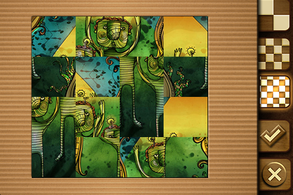

| 進度日期 |
討論/變更主題 |
內容與備註 |
| 2020.12.20 |
決定報告主題—拼圖遊戲 | 拼圖遊戲- 想法源於小時候所玩的撲克牌記憶遊戲，希望能設計出一個能夠依照所選難度，將圖片切割成不同大小的圖塊，讓玩家能進行拼圖遊 戲。  |
| 2020.12.31 | 更改主題—數獨遊戲 |
數獨遊戲- 想法源於過去在報紙中所看到的數獨遊戲，希望能設計出一個能夠自動生成題目、 供玩家選擇難度的電腦數獨遊戲。 |
| 2021.01.01 | 製作功能—內容大綱 |
視窗架構與內容大綱- 運用老師上課時所教的AWT函式庫，將遊戲視窗的介面設計完成。 |
| 2021.01.07 | 完成專題 |
完成整體內容- 完成數獨題目的生成函式，製作PPT簡報 |